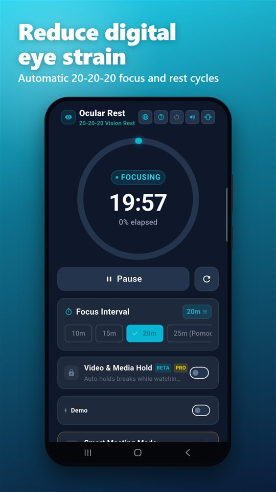
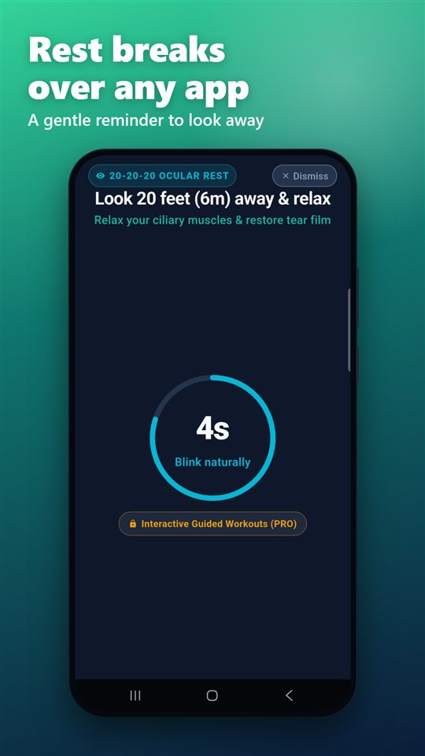

The 20-20-20 rule: a simple habit for tired screen eyes
What the rule is, how to do it, and a free Android timer that does the reminding for you.
Get Ocular on Google PlayWhat is the 20-20-20 rule?
Every 20 minutes you spend looking at a screen, look at something about 20 feet (6 metres) away for at least 20 seconds. That is the whole rule.
It is widely credited to the optometrist Dr. Jeffrey Anshel and is commonly recommended by eye care professionals as a way to ease digital eye strain.
Why it can help
When you concentrate on a screen you tend to blink less, and your eyes stay focused at one close distance for a long time. The rule builds in regular pauses so your eyes can change focus and you can blink normally again.
It is a habit, not a treatment. Research on exactly how much it helps is limited, and it does not replace an eye exam.
How to do it
- Set a reminder. It is easy to forget when you are absorbed in work, so use a timer.
- Look at something far away. A window view or the far side of the room works. It does not have to be exactly 20 feet.
- Hold it for 20 seconds. Let your eyes relax and your focus soften.
- Blink slowly a few times, then go back to what you were doing.
A few simple extras
Blink on purpose
Full, slow blinks help spread tears across the eye surface.
Check your setup
Keep the screen about an arm's length away, with the top near eye level.
Mind the lighting
Avoid glare from windows or lamps on the screen.
See a professional
If discomfort or blurry vision keeps coming back, book an eye exam.
Common questions
Does the 20-20-20 rule cure eye strain?
No. It is a simple habit that builds regular pauses into screen work. It is not a medical treatment. If symptoms continue, see an eye care professional.
Do I need to look exactly 20 feet away?
No. The aim is to shift your focus to something far away, such as a view out of a window or the far side of a room.
What if I forget to take the breaks?
That is the usual problem, which is why most people use a timer or a reminder app.
Ocular: the reminder app
Ocular is an Android app built around the 20-20-20 rule.
- Break screen over other apps. It needs the "Display over other apps" permission.
- Floating timer badge while you use other apps.
- Pauses during calls and, as a beta Pro option, during video playback.
- Daily goal and streaks to help the habit stick.
- Pro (one-time purchase): removes ads and adds guided eye exercises, a recovery overview and optional background chimes.
Free to use with ads. No account needed.
Get Ocular on Google Play
